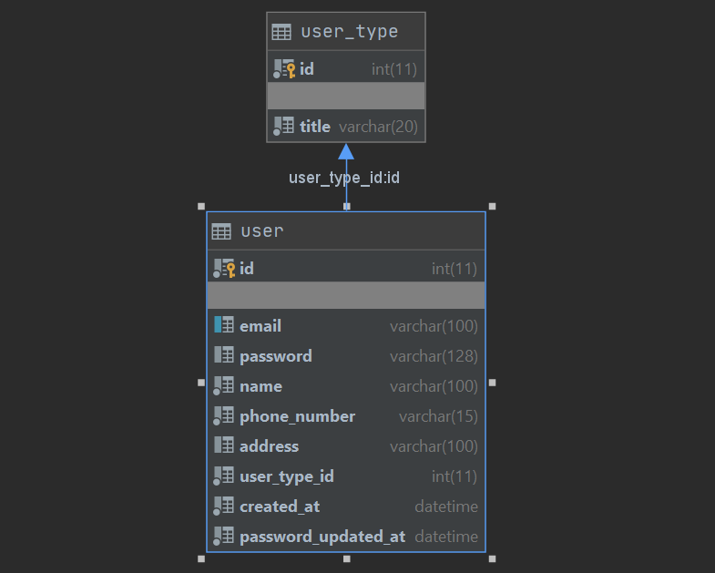
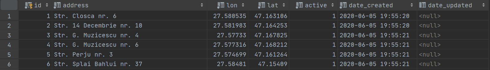

GaSM este o aplicație Web capabilă, pe baza unui API REST propriu, să gestioneze informațiile privitoare la colectarea, sortarea și reciclarea gunoiului – pe categorii: menajer, hârtie, plastic etc. – la nivelul cetățeanului, personalului autorizat și factorilor de decizie.
Se ofera suport pentru raportarea de către utilizatori a locurilor unde s-a acumulat o cantitate substanțială de gunoi, în vederea descongestionării. Pe unitate de timp (zi, săptămână, lună), vor fi generate rapoarte numerice și grafice – disponibile în formatele HTML, CSV și PDF – referitoare la situația actuală la nivel de localitate, evidențiindu-se zonele cele mai curate/mizere.
Interacțiunea cu utilizatorul respecta principiile designului Web responsiv. Sistemul ofera suport și pentru inițierea unor campanii de sensibilizare a locuitorilor privitoare la colectarea selectivă a gunoiului și a raportării incidentelor vizând depozitarea neadecvată a acestuia.
Site-ul este foarte modularizat de la frontend la backend. Am folosit decorator, façade si e foarte usor de adaugat componente noi.
Database
S-au folosit statement-uri prepared de fiecare data cand
a fost interogata baza de date.
Fig.1 - Structura bazei de date
Tabelul User
Datele ce vor fi introduse in acest tabel sunt furnizate de form-ul din pagina de /register si corespund
credentialelor contului nou creat.
Asa arata tabelul user, ca structura, acesta fiind tabelul unde vor fi stocate toate detaliile legate de
un utilizator:

Fig.2 - Structura tabelului user
Exemplu de date stocate in tabelul user:
Fig.3 - Exemplu de date din tabelul user
Tabelul User Type
Contine tipurile de utilizatori referentiate de tabelul user: administaror su utilizatorul standard
Structura tabelului user_type:
Fig.4 - Structura tabelului user_type
Asa arata datele stocate in tabelul user_type:
Fig.5 - Datele din tabelul user_type
Tabelul Campaign
Datele ce vor fi introduse in acest tabel sunt furnizate de form-ul din pagina de /campaign/create si corespund
detaliilor campaniei nou create.
Structura tabelului campaign acesta fiind tabelul unde vor fi stocate toate detaliile legate de
o campanie:
Fig.6 - Structura tabelului campaign
Exemplu de date stocate in tabelul campaign:
Fig.7 - Exemplu de date din tabelul campaign
Tabelul Campaign Attendee
Acest tabel retine persoanele de participa la o capanie.
Structura tabelului campaign_attendee:
Fig.8 - Structura tabelului campaign
Tabelul Collected
Stocheaza date despre gunoiul colectat dintr-o pubela.
Structura tabelului collected:
Fig.9 - Structura tabelului collected
Exemplu de date stocate in tabelul collected:
Fig.10 - Exemplu de date din tabelul collected
Tabelul Dumpster Address
Stocheaza locatia unui cos de gunoi.
Structura tabelului dumpster_address:
Fig.11 - Structura tabelului dumpster_address
Exemplu de date stocate in tabelul dumpster_address:

Fig.12 - Exemplu de date din tabelul dumpster_address
Tabelul Garbage Type
Stocheaza tipurile posibile de gunoi.
Structura tabelului garbage_type:
Fig.13 - Structura tabelului garbage_type
Datele stocate in tabelul garbage_type:
Fig.14 - Datele din tabelul garbage_type
Tabelul Notification
Stocheaza datele despre o alerta. Acestea sunt furnizate de formularul de la /alerts.
Structura tabelului notofication:
Fig.15 - Structura tabelului notification
Tabelul Public Dumpster
Stocheaza informatii despre cosurile de gunoi.
Structura tabelului public_dumpster:
Fig.16 - Structura tabelului public_dumpster
Datele stocate in tabelul public_dumpster:
Fig.17 - Exemplu de date din tabelul public_dumpster
Front End
Site-ul este construit ca un Single Page Application.
Astfel, componentele se incarca dinamic si nu mai apare reincarcarea (refresh-ul) la navigarea intre pagini.
Trecerea de pe o pagina pe alta se efectuaza mult mai fluid si rapid.
Fiecare pagina contine componenta "x-menu" ce se schimba daca utilizatorul este logat / neinregistrat.
Site-ul este responsive pe toate paginile lui. De exemplu recerea de pe o pagina pe alta se efectuaza mult mai fluid si rapid.
Harta
Ruta de vizualizare a hartii este cea principala, /.
Aceata pagina este alcatuita din meniu "x-menu" si din componenta de harta "x-map".
Harta a fost realizata prin leaftet.
Harta afiseaza toate cosurile si masinile de gunoi(urmarite in timp real) detinute de firma publica de salubrizare a orasului Iasi.
Acestea sunt grupate pe zone in functie de zoom-ul aplicat.
Fig.18 - Pagina de / pe desktop
Navigarea este usurata de prezenta unor butoane de zoom in/out, de full-screen si
de eliminare/adaugare a masinilor/cosurilor.
Cand dam click pe o pubela ni se afiseaza numarul, adresa si tipul ei.
Fig.19 - Detalii pubela
Statistici
Ruta de vizualizare a statisticilor /stats.
Aceata pagina este alcatuita din meniu "x-menu" si din componenta "x-stats". Aceasta are rolul de a afisa statistici
cu privire la colectarea gunoiului
Fig.20 - Grafice
Pe langa graficele interactive, aceasta pagina contine si un meniu aditional din care se poate seta
intervalul pentru date. Utilizatorul isi alege range-ul prestabilit (Astazi, Ieri, Utimele 7/30 zile, Luna aceasta/trecuta)
sau Custom. Alegera datei se poate face si introducand datele de la tastatura.
Fig.21 - Calendar Custom
Tabelul isi actualizeaza si ei datele in funtie de range-ul selectat. Acesta este paginat, cu cate maxin 40 de linii pe pagina.
Fig.22.1 - TabelFig.22.2 - Paginare tabel
Butoanele de PDF, HTML si CSV permit descarcarea datelor din tabel.
Fig.23 - Descarcare rapoarte
Autentificare
Formularele prezinta verificarea inputurilor pentru a se asigura ca utilizatorul introduce date corecte.
Spre exemplu numarul de telefon trebuie sa aiba formatul romanesc, email trebuie sa fie valid si parola trebuie sa aiba o lungime mai mare de 6 caractere pentru a fi valida. Validatea client-side este facuta prin precizarea tipurilor inputurilor si prin regex. Utilizatorului i se afiseaza un mesaj corespunzator atunci cand intampina o eroare.
Input box-ul destinat introducerii parolei va avea ca tip "password" pentru ca textul introdus inauntru sa fie cenzurat.
Nu se va putea inregistra un nou cont apasand butonul "Submit" fara ca toate campurile sa fie completate folosindu-se formatul specificat (pana cand toate campurile sunt inconjurate de border-ul verde).
Sub input box-uri se afla un buton de Submit cu latimea egala cu cea a formularului. Cand este apasat de utilizator, acesta va fi redirectionat
catre homepage si logat automat. De asemenea se va verifica server-side si daca adresa de mail / telefonul introdus mai exista,
iar daca da, acest lucru va fi specificat utilizatorului prin aparitia unui text de culoare rosie in partea inferioara a inputului si
border-ul specific unei erori de completare.
Register
Aceata pagina (/register) este alcatuita din meniu "x-menu" si din componenta de harta "x-register".
Aceata pagina este alcatuita din meniul ce iti schimba forma in functie de rezolutia dispozitivului, din formularul de inregistrare si din avantajele crearii unui cont.
Fig.24 - Pagina de /register pe desktop
Pe mobile textul din partea dreapta ajunge sub formular.
Fig.25 - Pagina de /register pe mobile
Login
Aceata pagina (/login) este alcatuita din meniu "x-menu" si din componenta de login "x-login".
Utilizatorul se poate loga ca administrator sau ca utilizator standard.
Utilizatorul poate ajunge pe pagina de login prin doua metode. Prima este prin apasarea butonului de login din meniu.
A doua varianta este prin accesarea unei rute ce necesita logarea pentru a fi accesata: /alerts, /campaigns.
Acest formular prezinta verificarea inputurilor pentru a se asigura ca utilizatorul introduce date corecte.
In plus, linkul din footer trimite catre formularul de inregistrare pentru cazul in care user-ul nu are cont.
In meniu apare butonul alerts.
Fig.26 - Pagina de /login pe desktop
Logout
Odata logat, meniul se schimba, butonul de login devine butonul de logout.
Fig.27 - Meniul, cand utilizatorul este logat.
Campanii
Ruta de vizualizare a campaniilor /campaigns.
Initiere Campanie
Ruta: /campaign/create
Necesita logare.
Campuri formular: titlu, descriere, data, adresa
Foloseste auth.css, foaia de stiluri a formularelor de autentificare.
Fig.28 - Formularul de creare a unei campanii /campaign/create
Vizualizare Campanii
Foloseste o foaie de stiluri proprie, view_campaigns.css
Lista de campanii se incarca prin infinite scrolling, cate 5, apelandu-se un request ajax get prin axios.
Fiecare campanie contine campurile precisate in crearea campaniei si datele despre organizator.
Se poate citi mai mult despre fiecare campanie individual si se poate apasa butonul "participa" pentru a
anunta ca vrei sa iei parte la activitatea respectiva.
Vizualizare Campanie
Alerte
Initiere Alerta
Ruta: /alerts
Necesita logare.
Campuri formular: titlu, descriere, data, adresa
Foloseste auth.css, foaia de stiluri a formularelor de autentificare.
Fig.28 - Formularul de creare a unei campanii /campaign/create
Vizualizare Alerte
Utilizatorul isi poate vedea alertele. Fiecare alerta poate fi stearasa de creator / actualizata de administrator cu statusul rezolvarii ei.
Vizualizare Campanie
Back End
Site-ul este foarte modularizat de la frontend la backend. Am folosit decorator, façade si e foarte usor de adaugat componente noi.
Tech
üêù
Bee este un framework facut de noi care ne-a ajutat la crearea site-ului de tip SPA.
Pentru a incarca componente dinamic, trebuie sa definim cate o clasa care va extinde clasa Component definita in Bee.
Aceasta clasa permite crearea unor metode sau atribute custom dar si suprascrierea unor metode prestabilite printre care:
componentDidMount() care este apelata inainte de crearea componentei, componentDidLoad() care este apelata dupa ce componenta
s-a incarcat, componentRemoved() care este apelata atunci cand componenta a fost distrusa (aceasta reprezentat de fapt un fel de
destructor). Inainte sa fie incarcata componenta, se vor include toate resursele necesare acelei componente in mod dinamic,
iar atunci cand este distrusa se elimina aceste resurse. Aceste resurse sunt specificate odata cu definirea tagului care va defini
componenta respectiva prin cate un vector de path-uri pentru fiecare tip de resursa (script/style). De asemenea, scripturile pot fi
incarcate atat inainte de crearea componentei, cat si dupa. La definirea tagului se poate include si un link catre un template html
al componentei care va fi creata.
Din moment ce nu avem voie sa folosim framework-uri si totusi aveam nevoie sa ne structuram codul am creat un framework propriu.
Am replicat foarte multe din functionalitatile unui framework standard de REST: suport middleware, suport jwt, suport parametrii
in url-ul rutei, erori standard, schimbarea erorilor standard.
Am folosit Deno pentru ca e versiunea imbunatatita a NodeJS si foloseste TypeScript by default.
Harta
Pozitia vehiculelor este data de un serviciu expus de SalubrIS.
Informatiile pentru statistici sunt preluate dinamic facand request GET la rutele /dumpsters/stats de fiecare data cand se schimba range-ul.
Ruta /dumpsters/stats primeste ca parametrii dateStart si dateEnd in format unix si returneaza un JSON cu numarul de kg de gunoi colectat pentru fiecare tip de deseu (hartie, menajer, ...) apeland o functie definita in repository-ul pentru tomberoane.
Ruta /dumpsters/stats/list returneaza pentru fiecare adresa cate kg de gunoi s-a colectat pentru fiecare deseu. Aceasta ruta primeste si ea parametrii dateStart si dateEnd, dar si paramatrii order si lastId care sunt utilizate pentru navigarea prin paginile de tabel inainte/inapoi, si parametrul limit care daca este setat pe false atunci returneaza un JSON cu toate datele ci nu doar cate 40 (cat reprezinta o pagina).
Authorize
Parolele sunt hash-uite cu brcrypt.
BCrypt adauga si un salt unic pt fiecare hash.